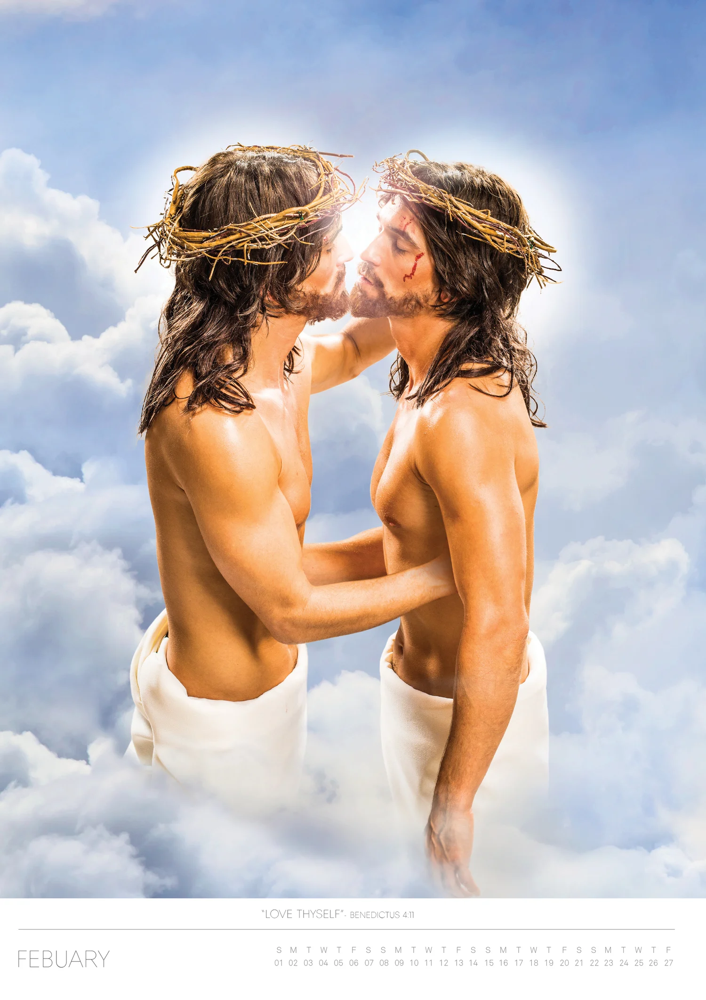
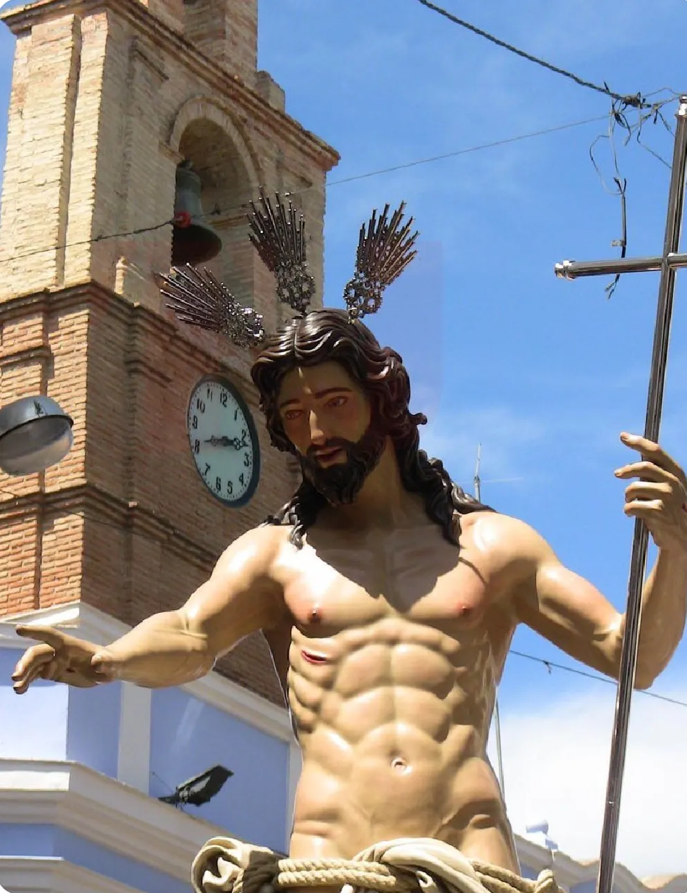
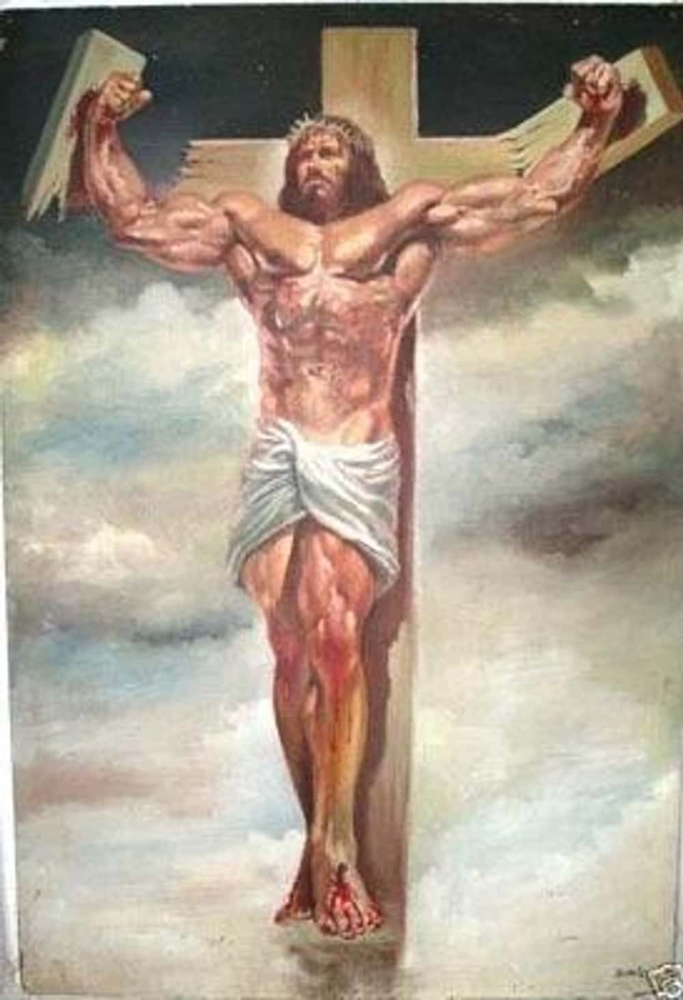
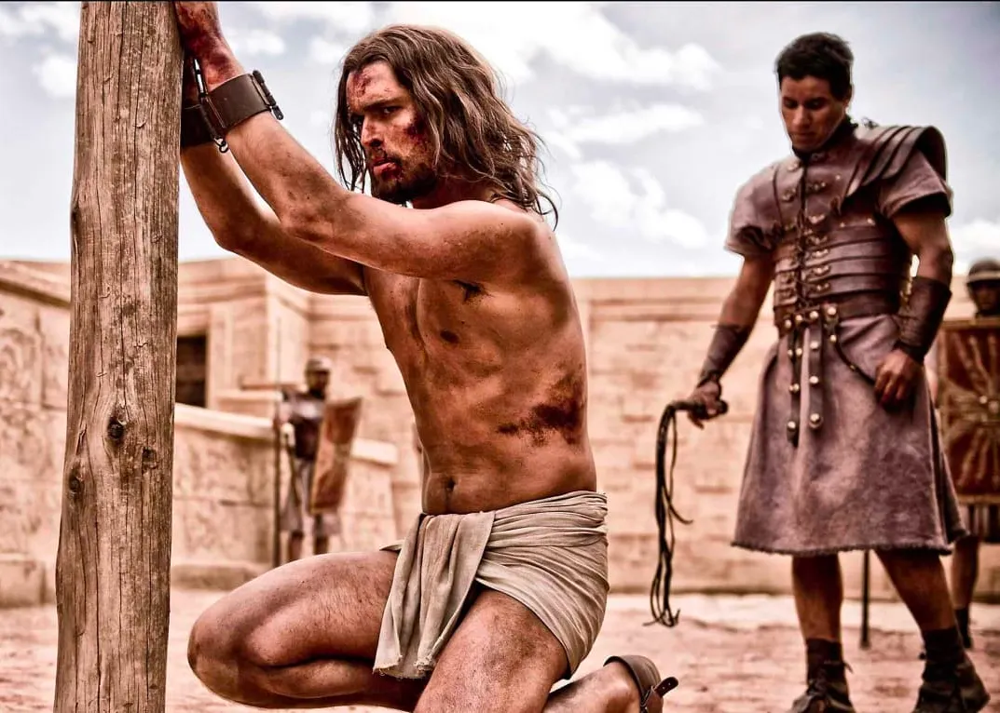

This e-zine volume is a gift made by andy, dedicated to my friends. Please accept this as an expression of my love
and friendship. I especially had in mind my friends Andi and WK, and the types of things I hoped they would find funny. i would have made this a physical zine...but we are 8,000+ km apart, so this was more reliable and efficient to share.
i have been thinking nostalgically about zine culture, and how we can adapt its radical scrappiness for the web. In many ways, i think the culture of zines has been
replaced with Inst*gram posts, which is easier to disseminate than a
zine, however, fuck Inst*gram, F*cebook, and M*ta, so this is hosted as
its own site instead.
i did not use AI to make this website, though one of the Jesuses is AI. You will be able to skip this Jesus without viewing if you prefer to avoid AI content.
Throughout the history of Christendom, many have wondered what Jesus looked like. Was he basic? Was he a twink? Was he (for some reason that defies the laws of genetics and history) white?
The answers to these questions are "maybe," "yes," and "definitely not," but regrettably most Sexy Jesus art does not align with his true Aesthetic. we at heretical content apologize, but hope you nonetheless enjoy these sexy Jesuses.
My church emphasized that Isaiah 53:2 said there was nothing in Jesus's appearance to draw people to him, and I remember them using an image from the BBC documentary "Son of G-d" that just depicted him as a regular dude. When I imagine Jesus, I personally just imagine this regular looking dude with longer hair:
But who cares what I, an ex-evangelical apostate, think about Jesus? By looking to his followers, we see depictions of a completely unrealistically sexy man. This makes significantly more sense than my "regular looking dude" theory: if Jesus wasn't hot as fuck, why would so many horny humans continue to worship him today? In this e-zine, I begin to set the record straight, centering the hunkiest depictions of Our Lord and Savior.
Jesuses are ranked by a 100% objective combination of their sexiness and complicity in heresy, with more heretical depictions gaining more points. Why? Heresy is hot, and I for one believe heretics should be working harder to defy G-d with heretical depictions of His only Son.
Hi there! this Jesus was originally generated using AI. While we at heretical content did not generate this AI Jesus (we found him in an thinkpiece about AI generated images of Jesus), we understand if you wish to avoid this AI Jesus. we assure you that there are no additional AI Jesuses. If you do not wish to view this Jesus, click to the next slide.
Chad Jesus
This Jesus gets a 3/10. The veins coming out from his heart look like they should absolutely not be popping out that way, this man is on the verge of death or blood poisoning a la Tony Stark in Ironman 2.
HOWEVER, this AI-generated image of Jesus, which I found in an article about Christians panicking over how how Jesus is in AI-generated image, earns heresy points for representing Jesus as SO hot that CNN wrote an article about whether it's a problem that AI represents Jesus as very sexy. This gets Chad Jesus 6 points for heresy. He gains an additional heresy point for having clearly taken supplemental T, because this is gender-affirming care and promotes the trans agenda. Unfortunately, Chad Jesus loses almost all of these points as a penalty for being AI art. He loses an additional point for being depicted in a modern gym and a T-shirt, neither of which existed in 1st century Palestine.
Bottom Jesus
This Jesus gets 7/10, 6 points for hotness and only 1 for heresy, as this is a scripturally inaccurate representation of Jesus's attire at the crucifuxion. Bottom Jesus loses 0 points for obviously being a bottom: this is a traditionally recognized aspect of Jesus and completely aligns with the scriptural canon. From Oli Beale's Sexy Jesus Calendar.
Egg Jesus
10/10. This is an actual image of a controversial painting commissioned by the Archdiocese of Seville painted by Salustiano García Cruz for a church in Spain. It raised concerns and debate for the androgynous portrayal of Jesus. This added a significant number of heresy points, because this is the only image in the list that was actually debated as a possible legitimate heresy, which you can read about more here. Barcelona Gallerist Artur Ramon explains: "It's a Christ that I would say is effeminate or androgynous in a way.... Spain is a country that is still quite homophobic, and people don't like that he is represented in this way for a festival that marks the passion of Christ in his final moments of life." This Jesus deserves credit for her incredible efforts to gay up Spanish Christianity, a goal we should all hold dear.
Floridian Jesus
This Jesus receives a 7/10. While his hotness is substantial and his multiple anachronistic wardrobe choices amp up the heresy level, this Jesus looks more heterosexual than any other Jesus in this list, so several points were deducted on this account.
Fabio Jesus
Fabio Jesus is an 6/10. While classically hot, This is a statue of Jesus in Yeongcheon in a Christian sculpture garden, discussed here. Points were deducted for having an uninteresting vibe, an overly strong jaw, and musculature that makes this Jesus fall into the uncanny valley.
this Jesus is unencumbered by the burden of clothing. we atheretical content understand that you may not wish to see the dingaling of Jesus, even if it is only an artistic rendering. If you do not wish to view this Jesus and his eggplant, click to the next slide.
Kink Jesus
9/10, Nudist Jesus's sensual lean on the cross is as sexy as it is heretical. He's got a rope and he's ready to be tied up. This gets him extra heresy points as well, because all good Christians know the only permissible kind of sex is vanilla intercourse in the missionary position between a heterosexual married couple, and this Jesus's clear interest in rope play opposes the traditional family structure. One could argue further that Jesus's appearance as nude invites further heretical conclusions: if Jesus appears as nude, does this perhaps imply that he thinks that the human state of sinfulness signalled by Adam and Eve's abandonment of nudity has been resolved without his death on the Cross? we considered giving Jesus an extra heresy point for this, but the subtext of the scene makes it seem as if Jesus may be in a more private setting, thus this depiction may not clearly indicate Jesus's perspective on the sinfulness of man prior to his death, and may simply depict Jesus getting freaky in a private setting.
Autoeroticism Jesuses

These Jesuses get an 8.5/10. While they are hot, they are not ACTUALLY kissing, making this image less hot than it otherwise could be. They get an additional heresy half-point for presenting only two aspects of the Christian G-d, rather than the traditional Trinitarian theology, implicitly advocating for Dualitarian theology as an alternative. Alternatively, this may reference a Quarternary view of the aspects of the Christian G-d, which would constitute heresy as well.
Gay Agenda Jesus
This Jesus gets a 9/10. While less classically hot than some other Jesuses, this Jesus gains heresy points for turning people gay. This Jesus was posted on Reddit with the following caption:
This powerfully speaks to the role of Gay Agenda Jesus in turning Christian youth gay, a critical point for his level of heretical potential. See more on this Jesus's lore here.
Twink Jesus

This Jesus receives a 9.5/10 for exemplifying the twink spirit, not only through his clear obsession with being skinny-ripped, but through his usage of accessories and makeup. A close inspection can reveal his blush, eyeliner, and airbrushed abs. The crown, rope garment, and cross-shaped walking stick prepare Twink Jesus for the hottest Fire Island party.
Bear Jesus

13/10. Could 100% smash capitalism. Also, bonus point for heresy, as Bear Jesus is clearly refusing to die to save humanity. This Jesus clearly suggests a rejection of the Cross through muscle, and is depicted undertaking actions which do not align with the scriptural canon. 3 additional heresy points for his obvious love of gender-affirming hormone treatment.
Sub Jesus

This Jesus receives a 8/10, due to high levels of hotness and clear advocacy for the expansion of kink acceptance within Christendom. This Jesus's cuffs, his scene partner's whip, and Sub Jesus's position on his knees clearly speak to heretically expand the Christian conceptualization of sexuality beyond simply intercourse for the sake of procreation. He would have received more points for heresy, but Jesus is canonically extremely into subjugating himself, so we were unable to award more points in this category.
In Summary
While Jesus may be best known as a savior, he is also a culturally important sex symbol who provides us opportunities to expand the scope of heretical internet content. If you disagree with our rankings, please consider that this was created through my 100% infallible knowledge of theology of hotness and consider that I am absolutely correct.
For more sexy Jesuses to rate, check out these links:here, here, here, and here.